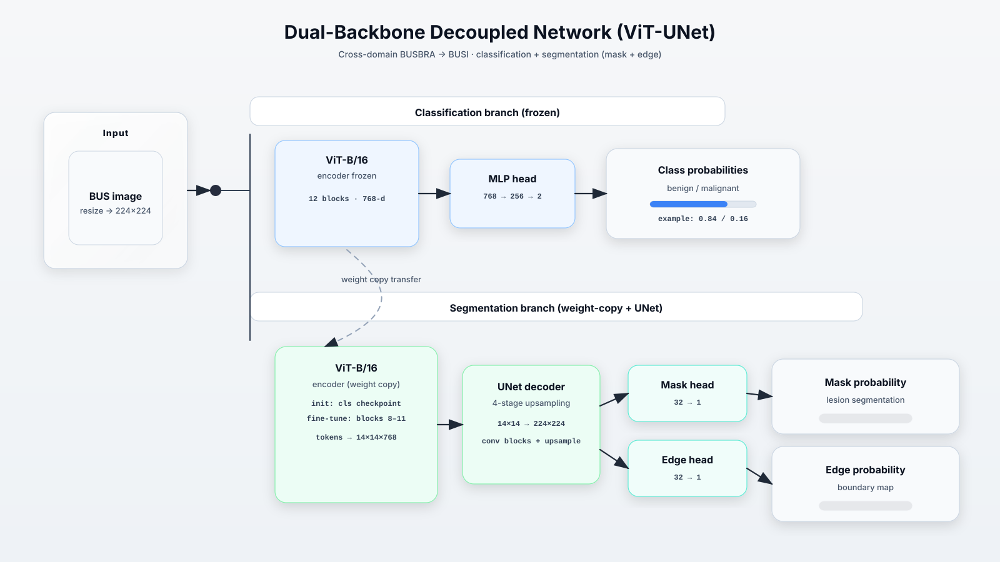
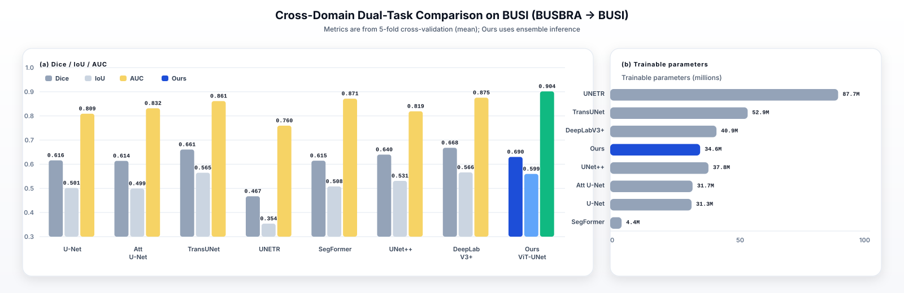
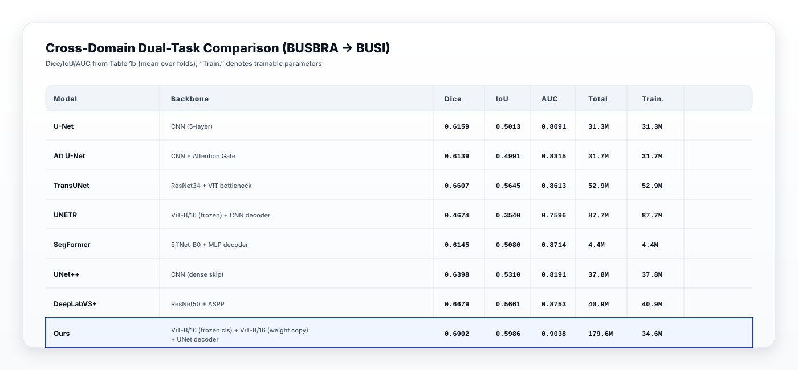
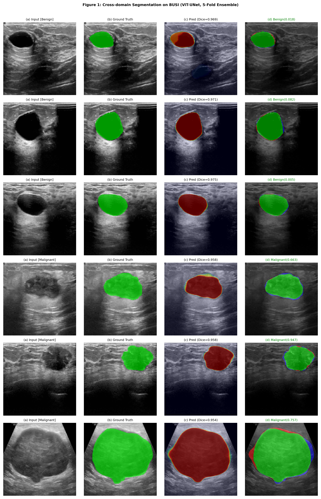
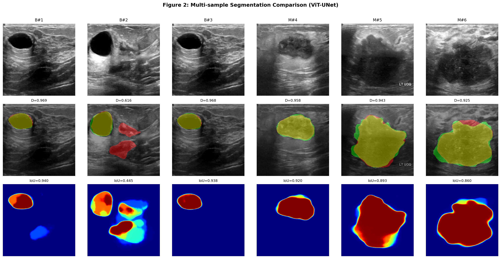
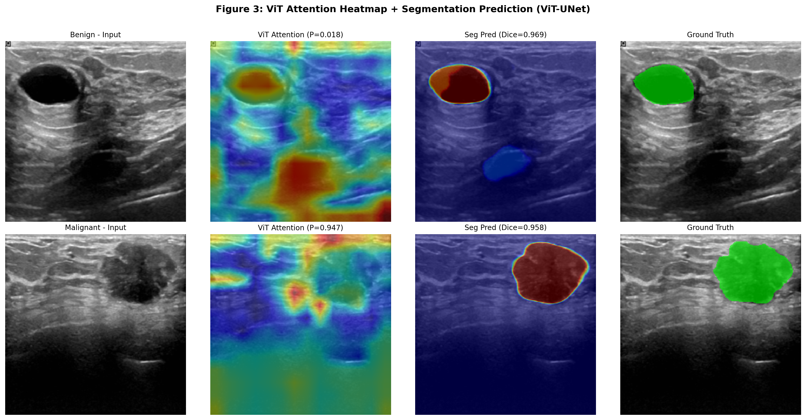
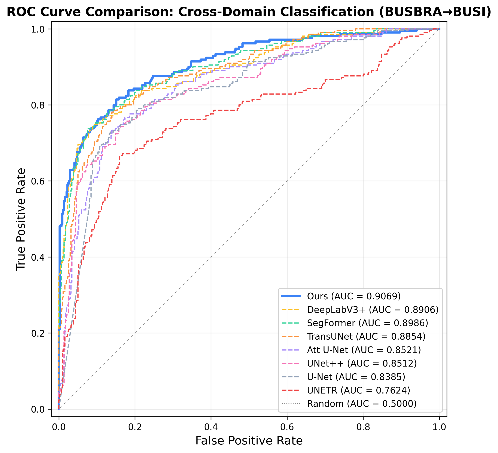
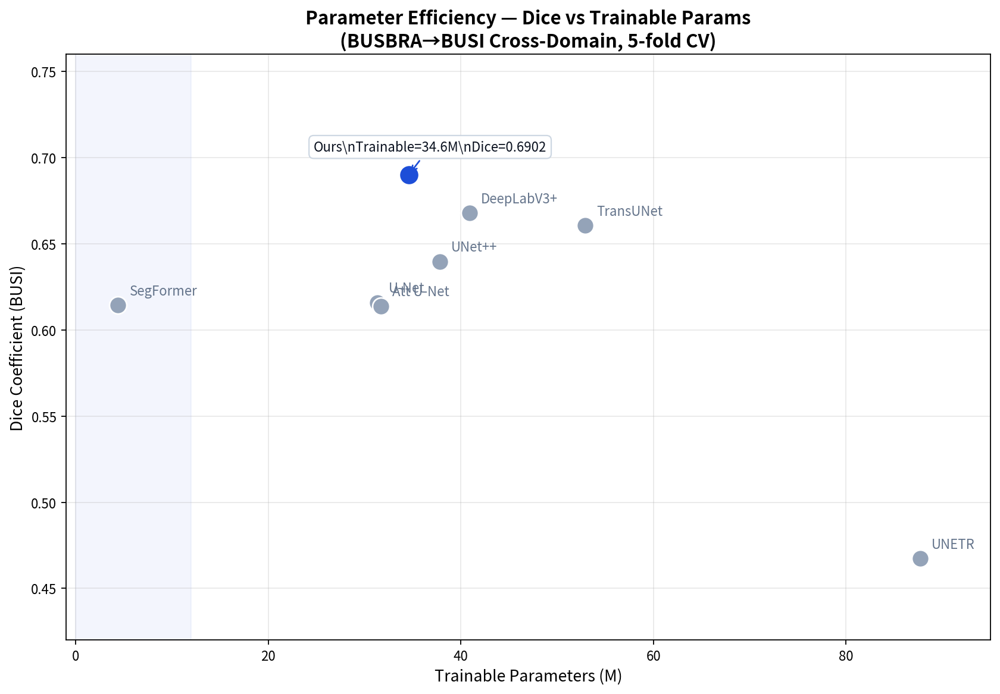
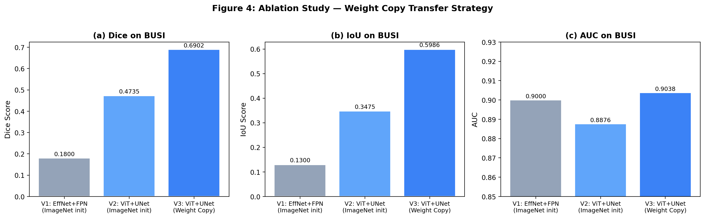
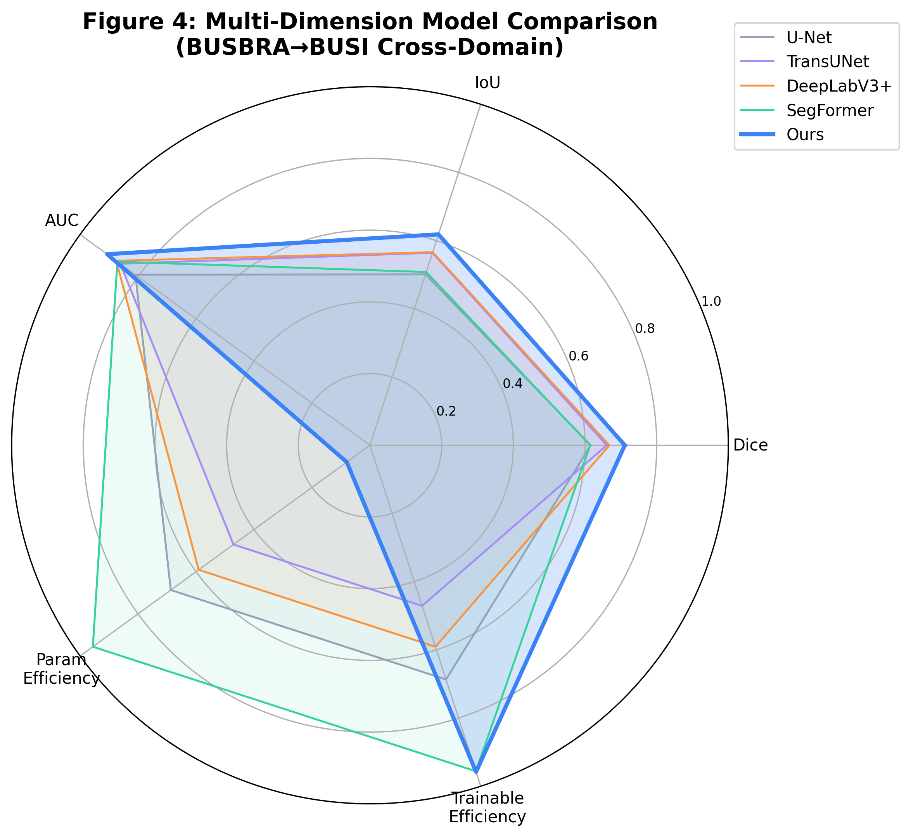

In [1]
# Two-branch decoupling
# cls: ViT-B/16 (frozen) → MLP → {benign, malignant}
# seg: ViT-B/16 encoder (weight-copied) → UNet decoder → {mask, edge}
# fine-tune: last 4 ViT blocks (8–11) + full UNet decoder









# Two-branch decoupling
# cls: ViT-B/16 (frozen) → MLP → {benign, malignant}
# seg: ViT-B/16 encoder (weight-copied) → UNet decoder → {mask, edge}
# fine-tune: last 4 ViT blocks (8–11) + full UNet decoder# IoU loss (as used in the report)
# L_seg = 0.3 * BCE + 0.7 * (1 - IoU)
# IoU = (sum(p*y) + eps) / (sum(p + y - p*y) + eps)# Multi-task objective
# L = L_seg + 0.1 * L_edgeOutputs:
- class_prob (benign/malignant)
- mask_prob (lesion area)
- edge_prob (boundary map)